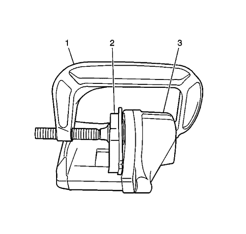

Sustitución de las pastillas de freno del disco delantero
Procedimiento de desmontaje
Advertencia : Consulte Advertencia relacionada con el polvo procedente de los frenos en la sección Prólogo
- Compruebe el nivel de líquido del depósito del cilindro maestro.
- Si el nivel del líquido de frenos está en un punto intermedio entre el nivel máximo y el nivel mínimo permitido, no es necesario sacar líquido de frenos del depósito antes de proseguir con el trabajo.
- Si el líquido de frenos está a más cerca del punto de llenado máximo que del nivel permitido mínimo, quite líquido de frenos del depósito hasta que se quede en el punto medio.
- Elevar el vehículo y soportarlo de manera segura. Consultar Elevación del vehículo con un gato
- Desmonte la rueda del vehículo. Consultar Desmontaje y montaje de la rueda y el neumático .
Atención: Sujete las pinzas de freno con alambre mecánico fuerte o equivalente cuando se separen del montaje y aún esté conectado el tubo flexible de freno hidráulico. Si no se sujetan las pinzas de esta manera, el tubo flexible de freno tendrá que soportar el peso de las pinzas, lo que puede provocar que se dañe el tubo flexible de freno y esto, a su vez, puede provocar una fuga de líquido de frenos.
- Desmonte el tornillo del pasador guía inferior de la pinza de freno (1).
- Sin desconectar el tubo flexible del freno hidráulico, gire la pinza hacia arriba y fíjela con un cable mecánico pesado o equivalente.
- Desmonte la pastilla de freno interior (1), del soporte de fijación de la pinza de freno (3).
Fíjese en la posición del sensor de desgaste de la pastilla de freno.
- Desmonte la pastilla de freno exterior (2), del soporte de fijación de la pinza de freno (3).
- Desmonte los retenes de pastilla de freno (1), del soporte de la pinza de freno (2).
- Compruebe el soporte y el hardware del freno de disco. Consultar Revisión del herraje y soporte del freno de disco delantero .
Procedimiento de montaje

- Monte un sargento grande (1) en el cuerpo de la pinza de freno (3), apoyando los extremos del sargento contra la parte trasera del cuerpo de la pinza de freno y contra una pastilla de freno interna vieja (2) o un pedazo de madera colocado contra los pistones de la pinza de freno.
- Apriete el sargento, de manera uniforme, hasta que el pistón de la pinza de freno esté completamente comprimido en el interior de la pinza de freno.
- Desmonte el sargento, y retire la pastilla de freno vieja o el pedazo de madera, de la pinza de freno.
- Monte los retenes de pastilla de freno (1) en el soporte de la pinza de freno (2).
Nota: Se tiene que montar la pastilla de disco de freno equipada con sensor de desgaste en el interior del rotor con el borde primario del sensor encarado con el rotor de freno durante el movimiento hacia delante de las ruedas, o en la parte superior de la pastilla cuando se instala en posición de vehículo.
- Monte las pastillas de freno (1, 2) en el soporte de la pinza de freno (3).
- Desmonte el soporte, y haga girar la pinza de freno hasta su posición por encima de las pastillas de freno de disco y en el soporte de fijación de la pinza.
Atención: Consulte Precaución con las fijaciones en la sección Prólogo
- Coloque el perno del pasador guía de la pinza de freno inferior y apriételo a 28 N·m (21 lib. pie).
- Monte el conjunto de neumático y llanta. Consultar Desmontaje y montaje de la rueda y el neumático .
- Bajar el vehículo.
- Con el motor apagado, pise poco a poco el pedal del freno hasta aproximadamente 2/3 de su recorrido.
- Suelte lentamente el pedal.
- Espere 15 segundos, y entonces pise de nuevo gradualmente el pedal hasta aproximadamente 2/3 de su recorrido hasta que el pedal de freno quede aplicado firmemente. Esto asentará correctamente los pistones de la pinza de freno y las pastillas de freno.
- Llene el depósito del cilindro maestro al nivel adecuado. Consultar Llenado del depósito acumulador de cilindro maestro .
- Pula las pastillas y los rotores. Consultar Pulido del rotor y las pastillas de freno .
| © Copyright Chevrolet Europe. All rights reserved |